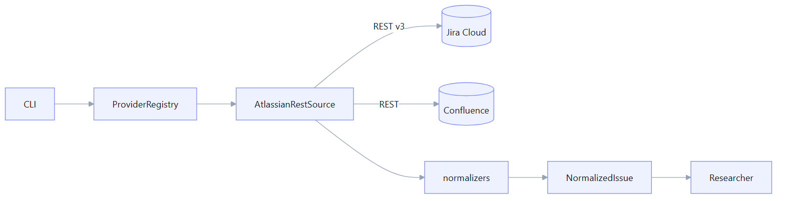
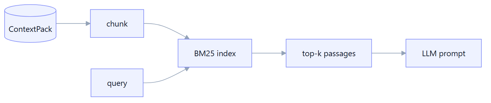

Context Layer
Everything that turns a raw Jira ticket into a rich, validated ContextPack the Test Architect can reason over — without silent truncation.
Overview
The Context Layer is the agent's "reading" half. Behind a single ContextProvider seam it
pulls the story, its description, comments, acceptance criteria, linked issues, development links, attachments
and Confluence pages, normalizes them, and assembles a ContextPack. Optional passes enrich that
pack with an evidence graph, a retrieval index, and vision
descriptions of mockups.
Provider registry & Jira fetch
A ProviderRegistry holds the configured context sources and looks them up by name. The first
implementation, AtlassianRestSource, wraps Jira + Confluence REST with basic auth and returns a
normalized issue (key, title, status, labels, components, links). The registry is the seam that lets
non-Jira providers (Rovo MCP, GitHub, …) drop in later without touching the Researcher.
Tech stack
How it works
- The CLI builds a provider from runtime config (
createJiraRestProviderFromRuntime). - The Researcher calls
provider.getIssue(key); the source fetches the issue and related data. - Normalizers map Jira's shape into Manso's
NormalizedIssuetypes. - Provenance and warnings are recorded per call so partial data degrades gracefully.

ContextPack artifact
The ContextPack is the durable, Zod-validated output of the Researcher: ticket facts,
description (with format), comments, acceptance criteria, linked issues, Xray test cases, development links,
Confluence pages, an optional evidence graph, retrieval citations, plus provenance and
warnings. It is written to out/<KEY>/context.json and .md.
Tech stack
Because every downstream stage consumes this one schema, the pack is the contract: if it validates, the
Test Architect can rely on its shape. New fields are added as .optional() so the pack can be
enriched incrementally without breaking older writers.
ADF → Markdown fidelity
Jira stores rich text as Atlassian Document Format (ADF). Naively flattening it loses tables, panels, code blocks, and inline links — exactly the structure that encodes requirements. Manso's ADF converter preserves tables, panels, lists, and code, and extracts inline links so referenced material can be followed.
How it works
A recursive walker maps each ADF node type to Markdown, keeping table rows/cells and panel callouts intact,
and collecting inlineCard/link nodes into a list of references the linked-ticket and Confluence
passes can resolve.
Linked-ticket expansion (bounded)
A story rarely stands alone — epics, sub-tasks, and "relates to" links carry essential context. Manso
expands linked issues to a bounded depth (configurable via context.linkedTicketDepth),
pulling their titles, descriptions and status so the design reflects the whole picture without runaway fan-out.
Attachments & vision understanding
Tickets attach mockups, screenshots, and PDFs. Manso downloads attachments through a credential-scoped seam (the token is only attached for same-origin Jira hosts, never to a redirected URL), extracts text from documents, and — when an LLM is configured — sends images to a vision model to describe mockups as evidence the Test Architect can cite.
Tech stack
How it works
- List attachments from the issue; download bytes via the scoped binary fetch (with
Accept: */*, so Jira serves the file's real content type — e.g.image/png— rather than 406-ing a narrow Accept). - Text-bearing files are parsed to text; images are base64-encoded.
- Images go to the vision model with a description prompt; the result becomes a piece of evidence (recorded as
analysisSource: "vision"on the attachment). - Failures warn and skip — a broken attachment never fails the run.
Evidence graph
The evidence graph assembles the pack's pieces — description paragraphs, comments, ACs, linked tickets,
attachment descriptions — into a graph of nodes the Test Architect and Coverage Auditor can
reference by id. Each scenario records the sourceEvidence it was derived from, giving full
traceability from a test back to the requirement that justified it.
Knowledge index (BM25 retrieval)
For large contexts, feeding everything to the LLM is wasteful and lossy. Manso builds a lightweight, in-memory BM25 index over the context chunks so the agentic researcher can retrieve the most relevant passages for a query instead of dumping the whole pack into the prompt.
Tech stack

Agentic researcher (tool-using retrieval)
With --deep, the Researcher becomes tool-using: instead of a single pass, the
LLM drives retrieval over the knowledge index and decides which linked tickets to expand, iterating until it
has enough grounded evidence. This trades cost for depth on complex stories, while the default flow stays
cheap and deterministic.
How it works
- Build the knowledge index from the base ContextPack.
- Expose retrieval + link-expansion as tools to the LLM.
- The model queries, reads passages, expands tickets, and stops when satisfied.
- Retrieved citations are recorded on the pack for traceability.